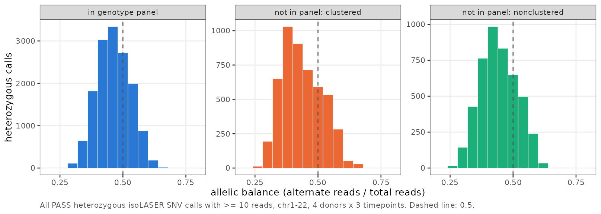

Last updated: 2026-10-20
Checks: 6 1
Knit directory: long_read_rna/
This reproducible R Markdown analysis was created with workflowr (version 1.7.0). The Checks tab describes the reproducibility checks that were applied when the results were created. The Past versions tab lists the development history.
The R Markdown is untracked by Git. To know which version of the R
Markdown file created these results, you’ll want to first commit it to
the Git repo. If you’re still working on the analysis, you can ignore
this warning. When you’re finished, you can run
wflow_publish to commit the R Markdown file and build the
HTML.
Great job! The global environment was empty. Objects defined in the global environment can affect the analysis in your R Markdown file in unknown ways. For reproduciblity it’s best to always run the code in an empty environment.
The command set.seed(20260908) was run prior to running
the code in the R Markdown file. Setting a seed ensures that any results
that rely on randomness, e.g. subsampling or permutations, are
reproducible.
Great job! Recording the operating system, R version, and package versions is critical for reproducibility.
Nice! There were no cached chunks for this analysis, so you can be confident that you successfully produced the results during this run.
Great job! Using relative paths to the files within your workflowr project makes it easier to run your code on other machines.
Great! You are using Git for version control. Tracking code development and connecting the code version to the results is critical for reproducibility.
The results in this page were generated with repository version af10976. See the Past versions tab to see a history of the changes made to the R Markdown and HTML files.
Note that you need to be careful to ensure that all relevant files for
the analysis have been committed to Git prior to generating the results
(you can use wflow_publish or
wflow_git_commit). workflowr only checks the R Markdown
file, but you know if there are other scripts or data files that it
depends on. Below is the status of the Git repository when the results
were generated:
Untracked files:
Untracked: analysis/isolaser_variant_artifacts.Rmd
Unstaged changes:
Modified: analysis/index.Rmd
Modified: analysis/isolaser_fdr.Rmd
Note that any generated files, e.g. HTML, png, CSS, etc., are not included in this status report because it is ok for generated content to have uncommitted changes.
There are no past versions. Publish this analysis with
wflow_publish() to start tracking its development.
We noticed this issue while preparing cTWAS models to connect our splicing associations with the schizophrenia (SCZ) GWAS. Each predictor uses one SNV associated with an exonic part, and cTWAS needs that SNV in its LD reference.
We started with the Screen before FDR from the genome-wide results. Restricting the candidate SNVs to the UKB LD reference removed a large fraction of the associations. At baseline, for example, 517 SNV associations became 235. This prompted us to check the coordinates, compare variants with our panel, and inspect their sequence context and read patterns.
| Step | 0 hr | 1 hr | 6 hr |
|---|---|---|---|
| Screen before FDR (same as FDR page) | 530 (191) | 773 (288) | 759 (285) |
| Single-base SNVs | 517 (187) | 755 (284) | 736 (279) |
| Variant matches UKB LD reference | 235 (97) | 371 (152) | 441 (162) |
| Remove A/T and C/G SNPs | 205 (82) | 301 (139) | 359 (137) |
| Choose one QTL per exonic part | 185 (82) | 281 (139) | 319 (137) |
| Chosen SNP also in SCZ GWAS | 138 (68) | 241 (122) | 286 (121) |
Cells show associations (genes), matching the convention on the FDR page. An association is a gene x variant x exonic part at one timepoint. Several variants can be associated with the same part. The screen’s 530 / 773 / 759 associations therefore represent 467 / 726 / 670 distinct exonic parts at 0 / 1 / 6 hr. After choosing one QTL per part, the association counts are also the numbers of cTWAS predictors.
The UKB LD reference contains variants with minor allele frequency >1% in White British samples, so genuine rare or filtered variants may be missing. Reference documentation One missing SNP can remove several parts.
The coordinate checks support the current conversion: all 692 REF bases agree with GRCh38, and offsets of -2, -1, +1, and +2 bp yield only 2 allele-matched variant/offset pairs, compared with 414 at the correct positions.
“Present in our panel” means our genotype panel has a record at the same position with the same two alleles. It does not establish that any particular donor is heterozygous.
| Measure | Present in our panel | Absent from our panel |
|---|---|---|
| Distinct screened SNVs | 396 | 296 |
| Associations with q < 0.05 | 138 | 399 |
| SNVs in homopolymer context | 10% | 56% |
| SNVs within 10 bp of an exon edge | 30% | 53% |
| Significant associations with 3-4 eligible RNA donors | 14% | 60% |
Definitions: homopolymer context means a run of >=4 identical A/C/G/T bases containing the SNV or an immediately adjacent base in a 21-base reference window. Exon distance uses annotated exon boundaries, not each read’s actual splice junction. An eligible RNA donor has >=30 informative reads and alternate fraction 0.25-0.75 for that association. These are RNA-based eligibility counts, not DNA genotypes. Repeated variants and selection for detectable effects prevent treating the donor counts as independent population-genotype observations.
As a reference check, 92.5% of SNVs in our panel match UKB; the allele-frequency correlation on up to 200,000 shared sites flagged TYPED is 0.981. This shows agreement between datasets, not the ancestry or genotype accuracy of each donor.
Across all PASS heterozygous RNA SNV calls with depth >=10, variants absent from our panel show a lower alternate-read fraction and more clustering:

| Group | Calls | Sites | Median ALT fraction | % of row’s sites in clusters of >=5 |
|---|---|---|---|---|
| in our panel | 14,758 | 5,334 | 0.47 | 1.8 |
| not in our panel: clustered | 5,007 | 1,683 | 0.43 | 61.6 |
| not in our panel: nonclustered | 4,594 | 2,304 | 0.44 | – |
RNA allele imbalance can be biological, so departure from 0.5 is a warning sign, not proof of an error. A cluster contains >=3 sites linked by consecutive gaps <=1 kb; its total span can exceed 1 kb. Sites are pooled across donors and timepoints. “Nonclustered” includes single sites and two-site groups.
For example, the RPLP0 cluster contains 12 sites in 340 bp, with calls from 4 donors. This warrants checking paralog/pseudogene alignments. It does not mean every site occurs in every donor. Genuine variation can also cluster, especially in polymorphic regions such as HLA.
| Gene | Our panel | UKB | Reference sequence (SNV in brackets) | Exon-edge distance (bp) |
|---|---|---|---|---|
| AHI1 | No | No | CTTCCTTTTT[C]TTTTTCCTTT | 5 |
| WDR45B | No | No | TTCTCTTTTT[C]TTTTAGTGGA | 7 |
| HNRNPK | Yes | Yes | CTCCTCACCG[C]GCGAGACTGC | 2 |
| KPNA2 | Yes | Yes | GCAGTCGCCC[T]ACAGCCGCTG | 49 |
For AHI1, changing the central C to T joins two five-T runs into 11 Ts; for WDR45B, it makes a ten-T run. These contexts and the missing records in our panel make the calls suspicious, but do not prove C-to-T sequencing errors. HNRNPK and KPNA2 have records in our panel and UKB and are better-supported follow-up candidates. HNRNPK’s proximity to an exon boundary does not establish causality.
These explanations are consistent with the observed patterns, but require read-level or independent genotype validation.
Why permutation may still find significance: if an erroneous base call or alignment occurs preferentially in one isoform, called allele and splicing status are associated. Shuffling breaks that association and can produce a small p-value. The test does not establish that the called allele exists in DNA. These are known challenges in long-read RNA variant calling.
This approach sacrifices some genuine variants missing from our panel. The current evidence supports cautious follow-up; the fraction of false variant calls remains unknown.
Data: SNVs from the screen (cis,
absolute delta-PSI >=0.10); associations are gene x SNV x exonic part
x timepoint. QTL results use the recording rerun; the genome-wide call
histogram uses the earlier Nanopore runs from the variant-validation page. Variant IDs
are isoLASER 0-based; VCF/UKB positions add one. Tables and figure are
computed by 8.isolaser_validation/21.variant_artifacts.R.
Download all cluster
examples or panel/reference
checks.
R version 4.2.0 (2022-04-22)
Platform: x86_64-pc-linux-gnu (64-bit)
Running under: CentOS Linux 7 (Core)
Matrix products: default
BLAS/LAPACK: /software/openblas-0.3.13-el7-x86_64/lib/libopenblas_haswellp-r0.3.13.so
locale:
[1] C
attached base packages:
[1] stats graphics grDevices utils datasets methods base
other attached packages:
[1] data.table_1.14.2
loaded via a namespace (and not attached):
[1] Rcpp_1.0.12 rstudioapi_0.13 knitr_1.39 magrittr_2.0.3
[5] workflowr_1.7.0 R6_2.5.1 rlang_1.1.2 fastmap_1.1.0
[9] fansi_1.0.3 highr_0.9 stringr_1.5.1 tools_4.2.0
[13] xfun_0.41 utf8_1.2.2 cli_3.6.1 git2r_0.30.1
[17] jquerylib_0.1.4 htmltools_0.5.2 rprojroot_2.0.3 yaml_2.3.5
[21] digest_0.6.29 tibble_3.2.1 lifecycle_1.0.4 later_1.3.0
[25] sass_0.4.1 vctrs_0.6.5 promises_1.2.0.1 fs_1.5.2
[29] glue_1.6.2 evaluate_0.15 rmarkdown_2.25 stringi_1.7.6
[33] bslib_0.3.1 compiler_4.2.0 pillar_1.9.0 jsonlite_1.8.0
[37] httpuv_1.6.5 pkgconfig_2.0.3